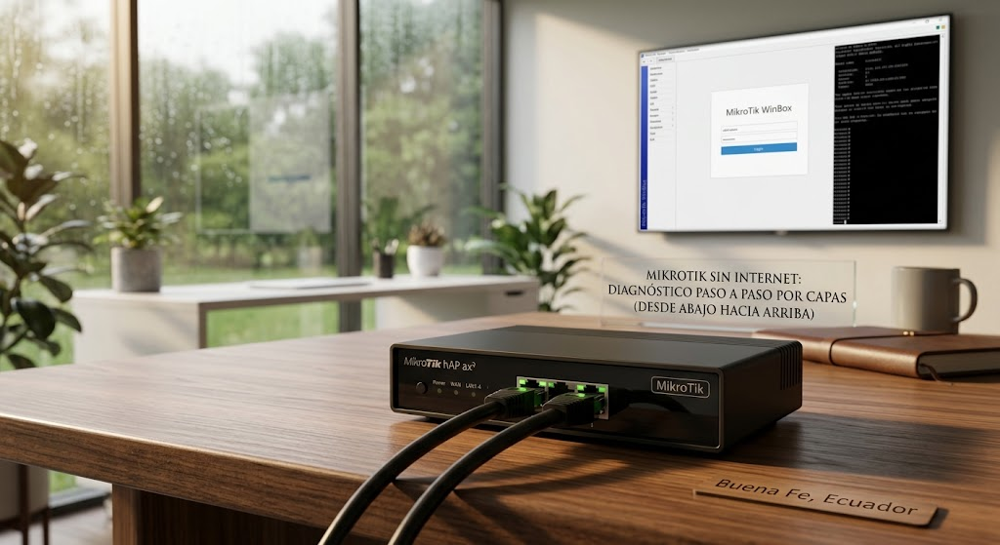
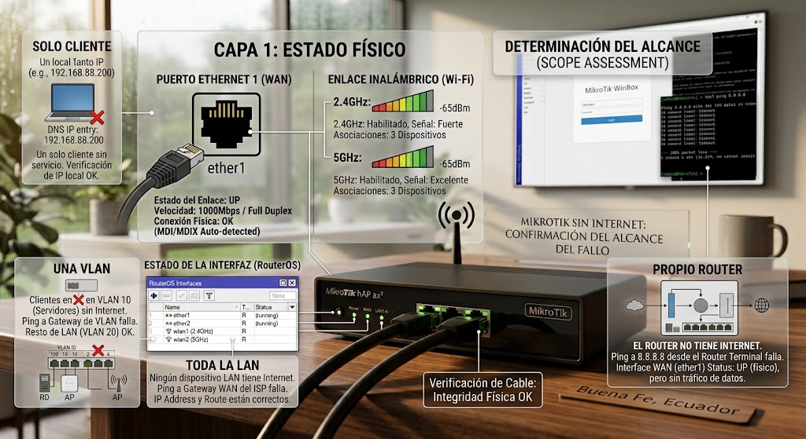
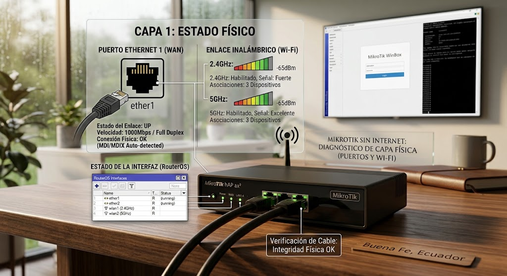
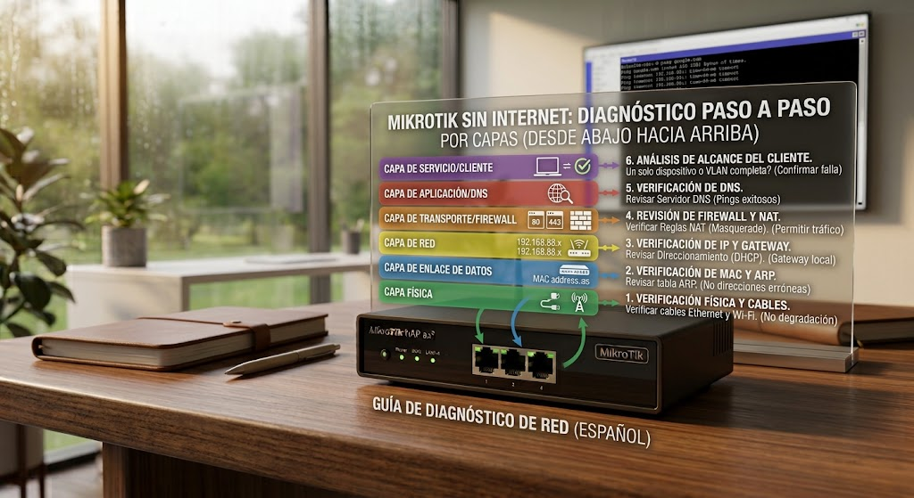
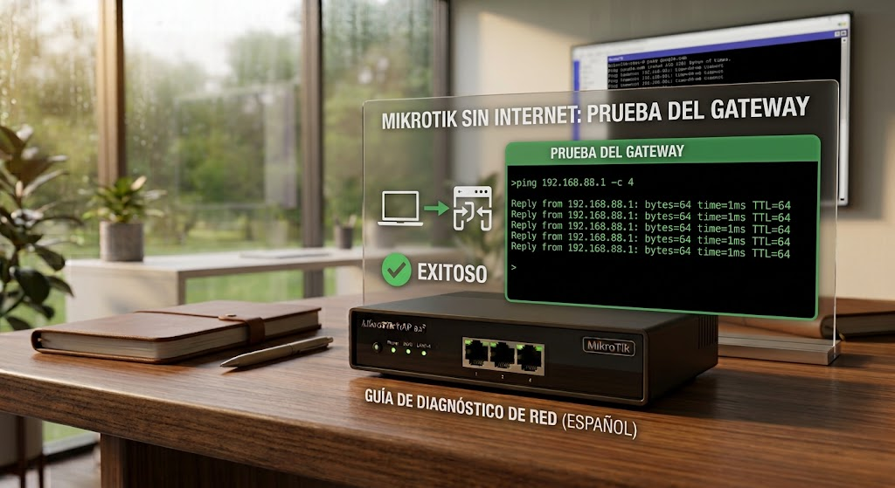
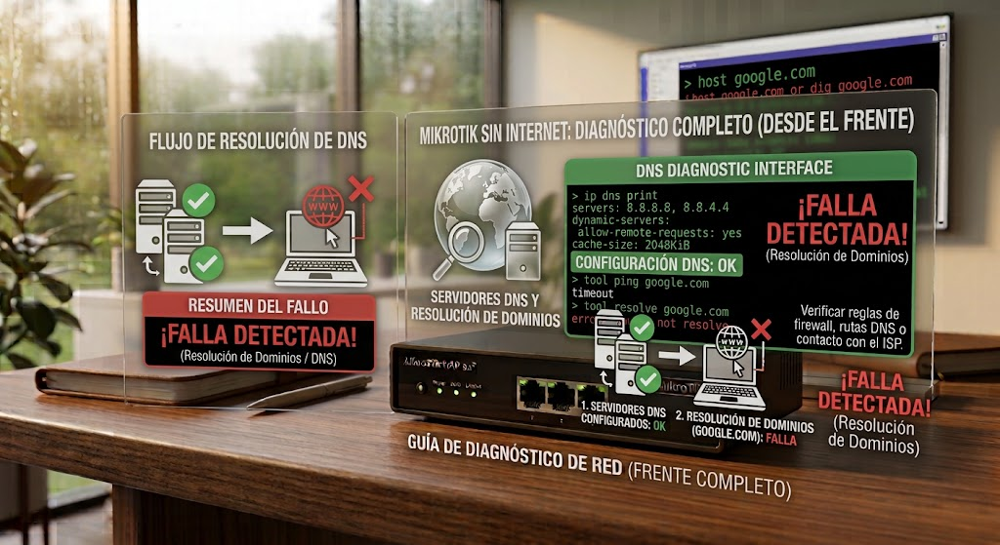
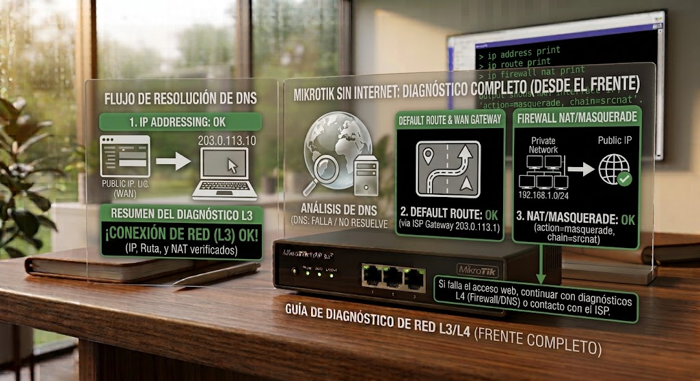

Introducción

La meta es llegar a una hipótesis con evidencia. No se trata de desmontar por desmontar: cada paso elimina una causa posible y prepara el siguiente.
Antes de empezar: seguridad
Retira alimentación y periféricos antes de abrir. No trabajes con una fuente de red abierta ni realices mediciones energizadas si no tienes formación e instrumental apropiados.
- Trabaja sobre una superficie limpia, seca y bien iluminada.
- Organiza tornillos y conectores por etapa.
- FotografÃa conexiones antes de desconectarlas cuando desmontes.
- No fuerces una cubierta: una resistencia inesperada suele indicar una fijación pendiente.
Herramientas y material
Diagnóstico paso a paso
Confirmar el alcance
Determina si falla un solo cliente, una VLAN, toda la LAN o también el propio router.

/interface print detail
/interface ethernet monitor ether1 once/interface print detailLista todas las interfaces fisicas y virtuales con su estado. Busca una "R" junto al nombre: significa "running" (activa). Si falta, la interfaz esta caida o deshabilitada.
Comprobar enlace
Revisa puerto Ethernet, enlace inalámbrico y estado de la interfaz.

/interface bridge port print detail
/interface ethernet monitor ether1 once/interface bridge host print detailLista que puertos fisicos pertenecen a cada bridge (la "red" logica que agrupa varios puertos). Si el puerto de tu cliente no aparece aqui, esta fisicamente conectado pero no forma parte de esa red. Muestra la tabla de direcciones MAC que el bridge ha aprendido en cada puerto. Si el MAC del equipo del cliente aparece aqui, el router ya lo ve a nivel de cableado/switch, y el problema (si existe) esta mas arriba, en IP o DHCP.
Comprobar IP
Verifica que el cliente tenga dirección, máscara y gateway correctos. Revisa DHCP si corresponde.

/ip address print detail
/ip dhcp-client print detail
/ip dhcp-server lease print detail/ip address print detailLista las direcciones IP asignadas a cada interfaz. Confirma que la IP se creo correctamente y que no choca con otra direccion ya existente en la red.
Probar gateway
Desde el cliente, haz ping al gateway del MikroTik.

/ping 192.168.88.1 count=5/ip route print detailPrueba de conectividad hacia el propio router/gateway desde un cliente de la LAN. Si no responde, el problema esta en la red local -cableado, bridge o IP-, no en Internet. Lista las rutas que el router conoce. Para salir a Internet debe existir una ruta "0.0.0.0/0" (ruta por defecto); si no aparece, el router no sabe hacia donde mandar el trafico que no es de su propia red.
Probar una IP pública
Haz ping a una IP pública conocida. Si responde y los dominios no, DNS gana prioridad.
/ping 1.1.1.1 count=5/ip route print detailPrueba de conectividad hacia Internet usando una IP publica conocida (Cloudflare), sin depender del DNS. Si responde con 0% de perdida, el problema NO es de ruteo o de Internet, sino probablemente de DNS. Lista las rutas que el router conoce. Para salir a Internet debe existir una ruta "0.0.0.0/0" (ruta por defecto); si no aparece, el router no sabe hacia donde mandar el trafico que no es de su propia red.
Qué hacer
- Haz la prueba desde el cliente afectado.
- Compara gateway, IP pública y dominio.
- Guarda copia de configuración antes de cambios.
Esta prueba separa conectividad de resolución de nombres.
Resultado esperadoSi la prueba es correcta, continúa. Si no lo es, conserva el resultado y sigue la rama de diagnóstico correspondiente.
Comprobar DNS
Revisa servidores DNS y resolución de dominios.

/resolve example.com
/ip dns print/ip dns printPide al router que resuelva un nombre de dominio a una direccion IP usando el DNS configurado. Si esto falla pero el ping por IP funciona, el problema es especificamente de DNS, no de conectividad. Muestra los servidores DNS configurados en el router y si tiene habilitado el modo "allow-remote-requests" para servir de DNS a los clientes.
Qué hacer
- Haz la prueba desde el cliente afectado.
- Compara gateway, IP pública y dominio.
- Guarda copia de configuración antes de cambios.
No cambies firewall/NAT para arreglar un problema que solo afecta DNS.
Resultado esperadoSi la prueba es correcta, continúa. Si no lo es, conserva el resultado y sigue la rama de diagnóstico correspondiente.
Revisar ruta y NAT
Comprueba ruta por defecto, gateway WAN y regla src-nat/masquerade según la topologÃa.

/ip route print detail
/ip firewall nat print stats
/ip firewall filter print stats
/ip firewall connection print/ip firewall nat print statsLista las rutas que el router conoce. Para salir a Internet debe existir una ruta "0.0.0.0/0" (ruta por defecto); si no aparece, el router no sabe hacia donde mandar el trafico que no es de su propia red. Muestra cuantos paquetes ha traducido esa regla de NAT. Un contador en cero sugiere que el trafico no esta pasando por ahi -revisa que "out-interface-list=WAN" apunte a la interfaz correcta-.
Qué hacer
- Haz la prueba desde el cliente afectado.
- Compara gateway, IP pública y dominio.
- Guarda copia de configuración antes de cambios.
Haz respaldo antes de cambios en producción.
Resultado esperadoSi la prueba es correcta, continúa. Si no lo es, conserva el resultado y sigue la rama de diagnóstico correspondiente.
Una prueba negativa no es un fracaso: es información. Registra qué se probó, con qué pieza o condición y qué cambió. Evita reemplazar varios componentes al mismo tiempo.
Tabla rápida de diagnóstico
| SÃntoma | Primera comprobación | Siguiente hipótesis |
|---|---|---|
| Cliente sin IP | DHCP fallando | Prioridad: LAN/DHCP |
| Gateway no responde | IP presente | Prioridad: enlace/VLAN/firewall |
| IP pública responde, dominio no | DNS falla | Prioridad: DNS |
| LAN funciona, Internet no | Gateway WAN/ruta | Prioridad: WAN/NAT |
Fuentes, licencias y referencias
- Fuente de imagen / referencia — revisa la licencia indicada en la ficha antes de redistribuir.
- Creative Commons BY-SA 4.0 cuando aplique a la imagen.
- iFixit / documentación de reparación como referencia técnica para PlayStation cuando corresponda.